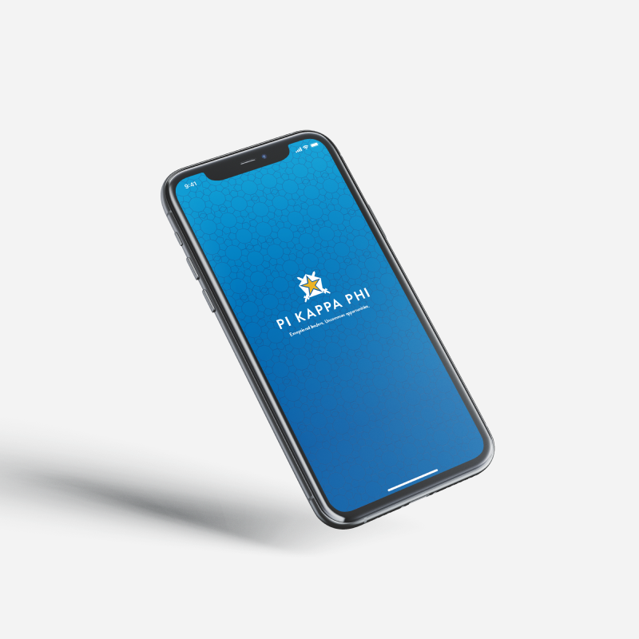
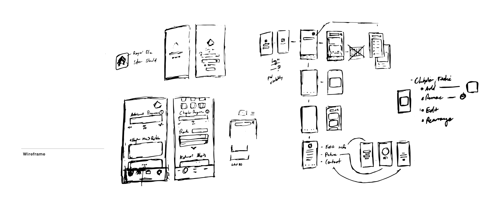
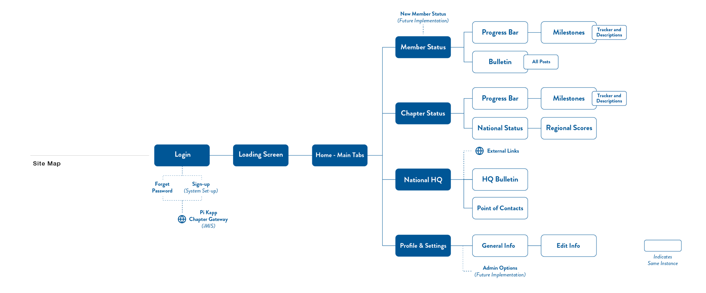
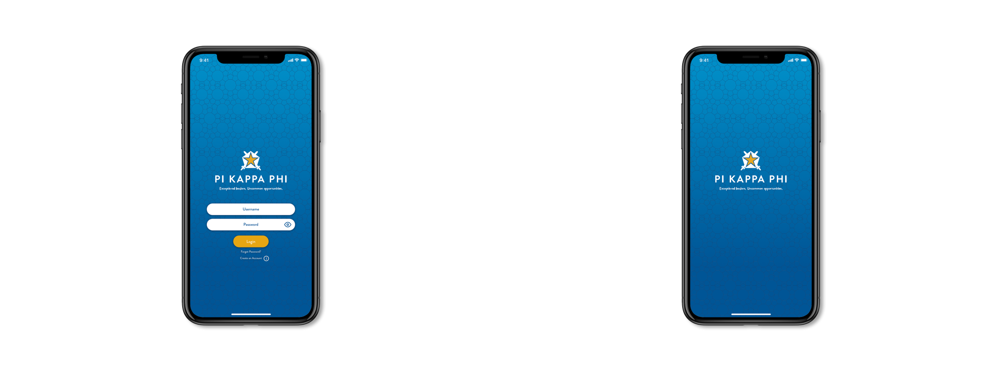
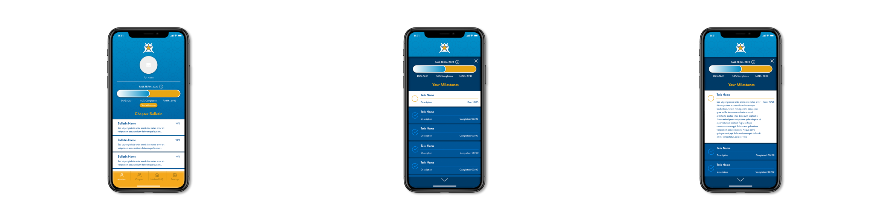

Design
Pi Kapp App
A mobile application concept for undergraduate fraternity members to track milestones and stay connected with their organization.

The Pi Kapp App is the mobile application concept for the undergraduate members of the fraternal leadership organization to better keep track of their milestones and stay up to date with important information.
Much of the research revolved around apps and programs that use engaging ways to promote their consumers to achieve goals to obtain an award, a notable enjoyment out of the Gen-Z student population.
Wireframing & Information Architecture


Exceptional Leaders, Uncommon Obstacles
The personas revolve around collegiate men varying in class year and engagement levels.
- Freshman student that just started their rush.
- Junior student that serves on the executive board.
- Graduating senior student on capstone classes.
Many of the wireframing decisions were centered around being able to incorporate data from the member database (iMIS) and connecting to preexisting resources and platforms. Along with following the brand style guides provided, the app's visual components follow a similar style as their main website.
Screens


The Next Milestone
Rather than losing documents and other communication, members of all levels can keep track of their milestones, their chapter's milestones, and be aware of news and deadlines from the national headquarters. Along with the noted, several other features can be considered such as a general version for alumni and volunteers to use, a chat platform, and additional ways to connect and network with regional chapters.